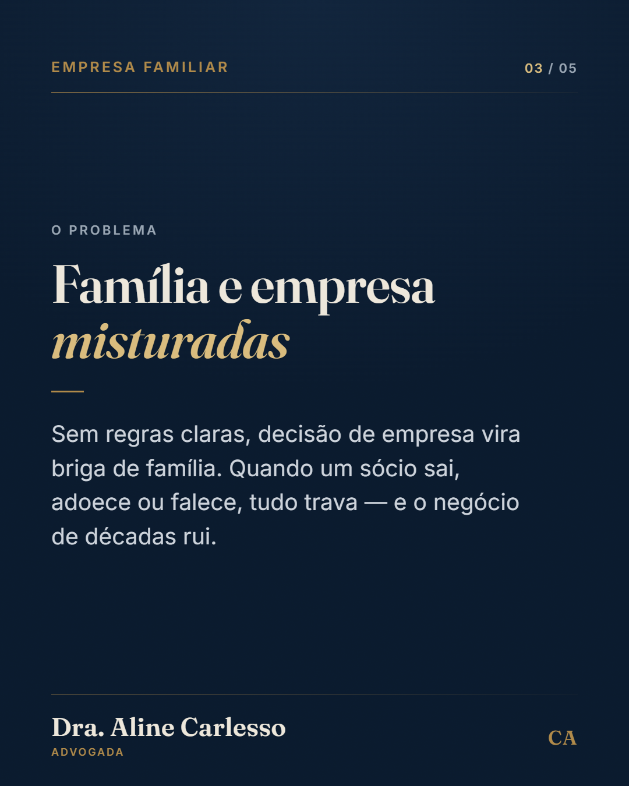
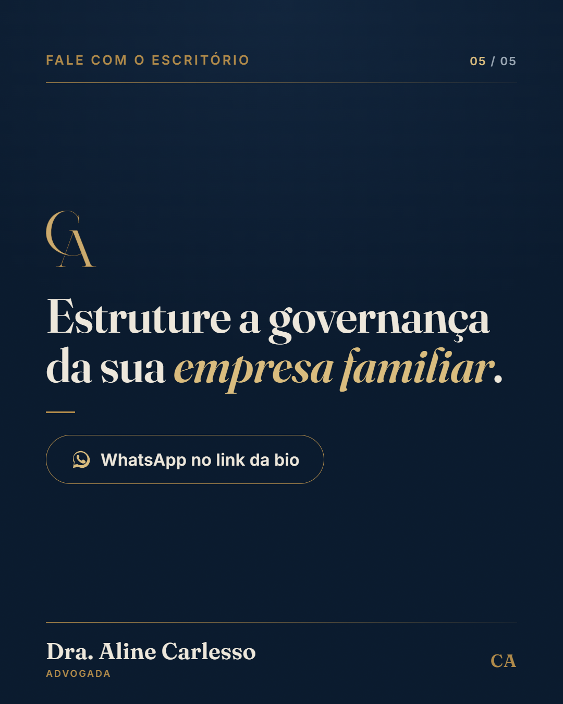

Planejamento sucessório: existe um dinheiro que não entra no inventário. O capital do seguro de vida não se considera herança — é o que diz o art. 794 do Código Civil. Ele vai direto ao beneficiário indicado na apólice, sem passar pela partilha. E em 2025 o Supremo Tribunal Federal firmou que o ITCMD não incide sobre o repasse de VGBL e PGBL aos beneficiários no caso de morte do titular (Tema 1.214), justamente por aplicar a esses planos o regime do seguro de pessoa. Quer entender como isso se encaixa no seu planejamento? Fale comigo pelo WhatsApp no link da bio.
Direito empresarial: seu sócio avisou que vai sair. E agora? Na sociedade por prazo indeterminado, o sócio pode se retirar mediante notificação aos demais com 60 dias de antecedência — art. 1.029 do Código Civil. Já a quota liquidada é paga em até 90 dias a partir da liquidação, salvo estipulação diferente no contrato social (art. 1.031, §2º). São prazos que mexem no caixa da empresa, e dá para se organizar antes. Quer revisar o contrato social da sua empresa antes que isso aconteça? Fale comigo pelo WhatsApp no link da bio.
Planejamento sucessório: existir testamento não condena a família a anos de processo. A Resolução CNJ nº 571/2024 consolidou o entendimento de que o inventário e a partilha podem ser feitos por escritura pública mesmo havendo testamento. Mas não basta o acordo entre os herdeiros. É preciso que todos os interessados estejam assistidos por advogado, que haja autorização expressa do juízo sucessório — em ação de abertura e cumprimento de testamento válido e eficaz, com decisão transitada em julgado — e que todos os interessados sejam capazes e estejam de acordo. O cartório entrou no caminho. Mas o juiz continua na porta de entrada. Quer saber se o inventário da sua família pode seguir pela via extrajudicial? Fale comigo pelo WhatsApp no link da bio.
Planejamento patrimonial: dá para passar os bens aos filhos hoje e continuar recebendo o aluguel. É a doação com reserva de usufruto. Você doa a nua-propriedade aos filhos e reserva para si o usufruto: transfere a titularidade do bem, mas mantém o controle e os frutos — o aluguel, por exemplo — enquanto viver. A base está nos arts. 538 e 1.390 e seguintes do Código Civil. Quer entender como estruturar isso no seu patrimônio? Fale comigo pelo WhatsApp no link da bio.


Empresa familiar não quebra por falta de lucro. Quebra na sucessão. Sem regras claras, decisão de empresa vira briga de família — e quando um sócio sai, adoece ou falece, tudo trava. O protocolo familiar é o acordo que define antes: quem entra, quem decide, como um sócio sai e como as cotas passam para a próxima geração. Reduz o atrito e o custo da transição, que é onde o negócio de décadas costuma ruir. Quer estruturar a governança da sua empresa familiar? Fale comigo pelo WhatsApp no link da bio.
Planejamento sucessório: testamento não é só para quem é rico. É para quem não quer que a Justiça decida sozinha pela família. Havendo herdeiros necessários — descendentes, ascendentes ou cônjuge —, metade dos bens da herança pertence a eles de pleno direito: é a legítima (arts. 1.845 e 1.846 do Código Civil), e sobre ela o testamento não dispõe (art. 1.857, §1º). A outra metade você destina como quiser. Não havendo herdeiros necessários, a disposição é livre sobre todo o patrimônio. Testamento não serve só para dividir bens: serve para reduzir litígio entre quem fica. Quer entender o que pode e o que não pode ser disposto em testamento? Fale comigo pelo WhatsApp no link da bio.
O reel dizia “já na mira do Fisco”. O Ato Técnico Conjunto CGIBS/RFB nº 1/2026 (31/07, esclarecido em 06/08)
suspendeu a rejeição automática das notas sem CBS/IBS — não a obrigação. A frase deixou de ser verdadeira.
A mesma frase está na legenda do lote v6 que ficou no VPS (cap-03.txt) — essa peça também não pode ser agendada como está.
Fica para reescrever no ângulo novo: “suspenderam a rejeição, não a obrigação”. É notícia pouco explorada, dá um bom gancho.
| Peça | Quando |
|---|---|
| 1 · Seguro de vida (reel) | qui 13/08 · 20h |
| 2 · Saída de sócio (reel) | dom 16/08 · 20h |
| 3 · Usufruto (carrossel) | ter 18/08 · 12h30 |
| 4 · Inventário (reel) | qua 19/08 · 20h |
| 5 · Governança (carrossel) | qui 20/08 · 12h30 |
| 6 · Testamento (post) | dom 23/08 · 19h30 |
Mix corrigido: com o C4 de volta são 3 reels em 7 dias (13, 16 e 19/08),
dentro da regra de ~3 reels por semana — reel é o motor de alcance; carrossel e post seguram o perfil,
mas não trazem gente nova.
Token do Instagram expira por volta de 07/09 — o lote inteiro cabe dentro da validade.